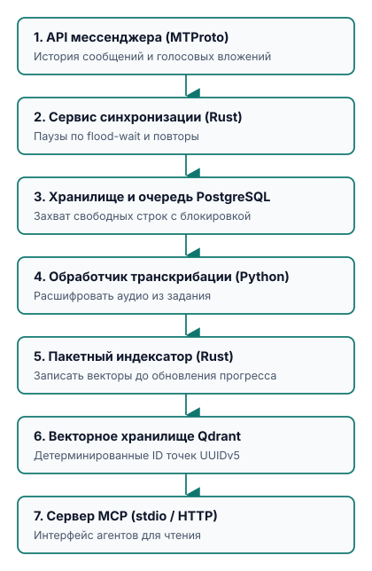

Архив сообщений и семантический поиск
Поиск по смыслу в текстах и расшифровках аудио из личного архива сообщений.
Независимый личный проект. На схеме показаны программные компоненты без примеров сообщений и записей об аккаунтах.
Инженерные подробности
- Инженерный контекст
- Личный проект разделяет импорт сообщений, транскрибацию и индексацию. Каждый этап можно повторить отдельно.
- Архитектура
- Сервис на Rust загружает записи сообщений через MTProto. PostgreSQL хранит записи и задания на транскрибацию. Обработчик на Python запускает Whisper, а индексатор на Rust сохраняет векторные представления в Qdrant. Поиск доступен через MCP.
- Технические задачи
- Параллельные обработчики могут столкнуться с заданиями, которые уже взял другой обработчик.
- Векторное хранилище и контрольная точка индексации находятся в разных системах.
- Проектные решения
- Блокировать строки PostgreSQL с FOR UPDATE SKIP LOCKED, чтобы обработчики пропускали занятые строки.
- Назначать каждой операции вставки или обновления вектора детерминированный идентификатор UUIDv5.
- Продвигать контрольную точку индексации после успешной записи вектора.
- Надёжность
- При повторе вектор можно записать с тем же идентификатором. Другие побочные эффекты требуют собственной дедупликации.
- Сбой между этапами может оставить задания для повторной обработки. Прогресс сохраняется после каждого завершённого этапа.
- Что делает проект
- Объединяет поиск по сообщениям и транскрипциям в интерфейсе MCP.
Технологии
- Rust
- Python
- MTProto
- PostgreSQL
- Whisper
- Qdrant
- MCP
